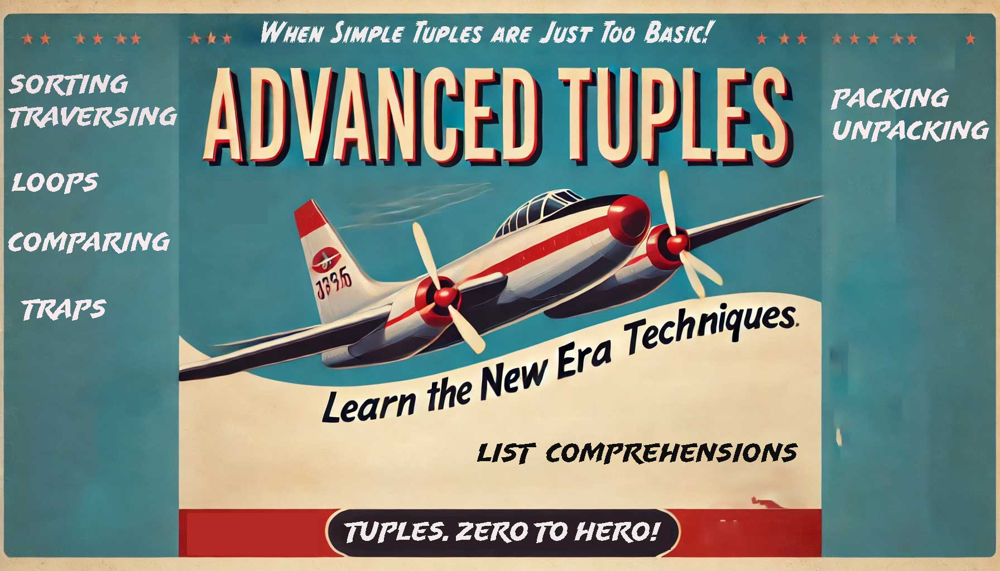

Table of contents
{: .text-delta } 1. TOC {:toc}Advanced Tuples¶
In this article, we’ll explore some advanced features and uses of tuples in Python.
Using Parentheses with Tuples¶
Interpolating Values in a String¶
When using the % operator to insert values into a string, you need to wrap the values in a tuple using parentheses.
# Correct way
print("Hi, %s! You are %s years old." % ("Ravi", 30))
# Output: 'Hi, Ravi! You are 30 years old.'
# Incorrect way
print("Hi, %s! You are %s years old." % "Ravi", 30)
# Output: TypeError: not enough arguments for format string
In the first example, the values are wrapped in a tuple, so it works. The second example raises an error because the values are not in a tuple.
Creating Single-Item Tuples¶
To make a tuple with only one item, you need to include a comma after the item.
one_word = "Pranam",
print(one_word) # Output: ('Pranam',)
one_number = (88,)
print(one_number) # Output: (88,)
The comma is necessary to make it a tuple and not just a regular string or number.
Using the tuple() Constructor¶
You can use the tuple() function to make tuples from a list, set, dictionary, or string. If you call tuple() without any arguments, it creates an empty tuple.
Examples:¶
print(tuple(["Asharam Bapu", 28, 5.9, "India"]))
# Output: ('Asharam Bapu', 28, 5.9, 'India')
print(tuple("Developer"))
# Output: ('D', 'e', 'v', 'e', 'l', 'o', 'p', 'e', 'r')
print(tuple({
"make": "Honda",
"model": "Civic",
"year": 2021,
}.values()))
# Output: ('Honda', 'Civic', 2021)
print(tuple())
# Output: ()
Accessing Items in a Tuple: Indexing¶
You can get items from a tuple using their index numbers. Indexes start from 0.
Example:¶
person = ("Sita", 22, 5.4, "Nepal")
print(person[0]) # Output: 'Sita'
print(person[1]) # Output: 22
print(person[3]) # Output: 'Nepal'
You can also use negative indexes to get items from the end.
Example:¶
Retrieving Multiple Items From a Tuple: Slicing¶
Slicing allows you to get parts of a tuple.
Example:¶
days = ("Sunday", "Monday", "Tuesday", "Wednesday", "Thursday", "Friday", "Saturday")
print(days[:3]) # Output: ('Sunday', 'Monday', 'Tuesday')
print(days[3:]) # Output: ('Wednesday', 'Thursday', 'Friday', 'Saturday')
Exploring Tuple Immutability¶
Tuples are immutable, which means you can’t change, add, or remove items after creating them.
Example:¶
person = ("Sita", 22, 5.4, "Nepal")
# Trying to change a value will cause an error
person[3] = "India"
# Output: TypeError: 'tuple' object does not support item assignment
# Trying to delete an item will cause an error
del person[2]
# Output: TypeError: 'tuple' object doesn't support item deletion
Packing and Unpacking Tuples¶
Example:¶
# Packing a tuple
coordinates = (19.0760, 72.8777)
# Unpacking a tuple
lat, lon = coordinates
print(lat) # Output: 19.0760
print(lon) # Output: 72.8777
Returning Tuples From Functions¶
Functions can return multiple values as tuples.
Example:¶
def min_max(values):
if not values:
raise ValueError("input list must not be empty")
return min(values), max(values)
result = min_max([7, 2, 8, 4, 5])
print(result) # Output: (2, 8)
print(type(result)) # Output: <class 'tuple'>
Concatenating and Repeating Tuples¶
Concatenating Tuples¶
name = ("Rohit",)
surname = ("Sharma",)
full_name = name + surname
print(full_name)
# Output: ('Rohit', 'Sharma')
Repeating Tuples¶
Reversing and Sorting Tuples¶
Reversing a Tuple¶
days = ("Sunday", "Monday", "Tuesday", "Wednesday", "Thursday", "Friday", "Saturday")
reversed_days = days[::-1]
print(reversed_days)
# Output: ('Saturday', 'Friday', 'Thursday', 'Wednesday', 'Tuesday', 'Monday', 'Sunday')
Sorting a Tuple¶
Traversing Tuples in Python¶
Using a for Loop¶
monthly_sales = (
("January", 12000),
("February", 14000),
("March", 13000),
("April", 15000),
)
total_sales = 0
for month, sales in monthly_sales:
total_sales += sales
print(total_sales) # Output: 54000
Using a List Comprehension¶
Other Features of Tuples¶
.count() and .index() Methods¶
fruits = ("mango", "banana", "apple", "mango", "mango", "kiwi", "banana")
print(fruits.count("mango")) # Output: 3
print(fruits.index("kiwi")) # Output: 5
Membership Tests¶
languages = ("Hindi", "English", "Tamil", "Telugu")
print("Tamil" in languages) # Output: True
print("Bengali" not in languages) # Output: True
Getting the Length of a Tuple¶
Comparing Tuples¶
print((3, 4) == (3, 4)) # Output: True
print((10, 15, 20) < (20, 15, 10)) # Output: True
print((7, 8, 9) <= (7, 8, 9)) # Output: True
Common Traps¶
When creating a one-item tuple, don't forget the trailing comma.
Tuples containing mutable objects, like lists, can't be used as dictionary keys.